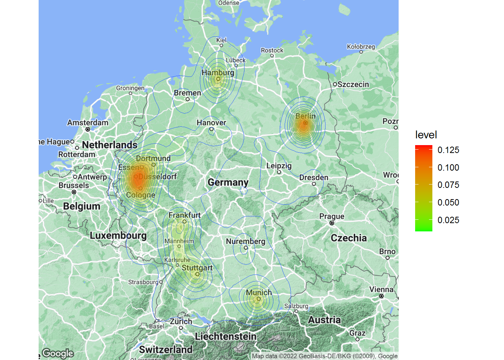

05-visualization
0.1 Data visualization
This section discusses how to produce appropriate graphics to describe our data visually. While R includes tools to build plots, we will be using the ggplot2 package by Hadley Wickham. It has the advantage of being fairly straightforward to learn but being very flexible when it comes to building more complex plots. For a more in depth discussion you can refer to chapter 4 of the book “Discovering Statistics Using R” by Andy Field et al. or read the following chapter from the book “R for Data science” by Hadley Wickham as well as “R Graphics Cookbook” by Winston Chang.
You can download the corresponding R-Code here
ggplot2 is built around the idea of constructing plots by stacking layers on top of one another. Every plot starts with the ggplot(data) function, after which layers can be added with the “+” symbol. The following figures show the layered structure of creating plots with ggplot.


0.1.1 Categorical variables
0.1.1.1 Bar plot
To give you an example of how the graphics are composed, let’s go back to the frequency table from the previous chapter, where we created this table:
music_data <- read.csv("/home/felix/Documents/e-Assistant IMSM/course_daniel/music_data.csv",
sep = ",",
header = TRUE,
stringsAsFactors = FALSE) #read in data
head(music_data)s.genre <- c("pop","hip hop","rock","rap","indie")
music_data <- subset(music_data, top.genre %in% s.genre)
music_data$genre_cat <- as.factor(music_data$top.genre)
music_data$explicit_cat <- factor(music_data$explicit, levels = c(0:1),
labels = c("not explicit", "explicit"))How can we plot this kind of data? Since we have a categorical variable, we will use a bar plot. However, to be able to use the table for your plot, you first need to assign it to an object as a data frame using the as.data.frame()-function.
table_plot_rel <- as.data.frame(prop.table(table(music_data[,c("genre_cat")]))) #relative frequencies #relative frequencies
head(table_plot_rel)Since Var1 is not a very descriptive name, let’s rename the variable to something more meaningful
library(plyr)
table_plot_rel <- plyr::rename(table_plot_rel, c(Var1="Genre"))
head(table_plot_rel)Once we have our data set we can begin constructing the plot. As mentioned previously, we start with the ggplot() function, with the argument specifying the data set to be used. Within the function, we further specify the scales to be used using the aesthetics argument, specifying which variable should be plotted on which axis. In our example, we would like to plot the categories on the x-axis (horizontal axis) and the relative frequencies on the y-axis (vertical axis).
library(ggplot2)
bar_chart <- ggplot(table_plot_rel, aes(x = Genre,y = Freq))
bar_chart
Figure 1: Bar chart (step 1)
You can see that the coordinate system is empty. This is because so far, we have told R merely which variables we would like to plot but we haven’t specified which geometric figures (points, bars, lines, etc.) we would like to use. This is done using the geom_xxx function. ggplot includes many different geoms, for a wide range of plots (e.g., geom_line, geom_histogram, geom_boxplot, etc.). A good overview of the various geom functions can be found here. In our case, we would like to use a bar chart for which geom_col is appropriate.
bar_chart + geom_col() 
Figure 2: Bar chart (step 2)
Note that the same could be achieved using geom_bar. However, by default geom_bar counts the number of observations within each category of a variable. This is not required in our case because we have already used the prop.table() function to compute the relative frequencies. The argument stat = "identity" prevents geom_bar from performing counting operations and uses it “as it is”.
bar_chart + geom_bar(stat = "identity") Figure 3: Bar chart (alternative specification)
Now we have specified the data, the scales and the shape. Specifying this information is essential for plotting data using ggplot. Everything that follow now just serves the purpose of making the plot look nicer by modifying the appearance of the plot. How about some more meaningful axis labels? We can specify the axis labels using the ylab() and xlab() functions:
bar_chart + geom_col() +
ylab("Relative frequency") +
xlab("Genre") Figure 4: Bar chart (step 3)
How about adding some value labels to the bars? This can be done using geom_text(). Note that the sprintf() function is not mandatory and is only added to format the numeric labels here. The function takes two arguments: the first specifies the format wrapped in two % sings. Thus, %.0f means to format the value as a fixed point value with no digits after the decimal point, and %% is a literal that prints a “%” sign. The second argument is simply the numeric value to be used. In this case, the relative frequencies multiplied by 100 to obtain the percentage values. Using the vjust = argument, we can adjust the vertical alignment of the label. In this case, we would like to display the label slightly above the bars.
bar_chart + geom_col() +
ylab("Relative frequency") +
xlab("Genre") +
geom_text(aes(label = sprintf("%.0f%%", Freq/sum(Freq) * 100)), vjust=-0.2) Figure 5: Bar chart (step 4)
We could go ahead and specify the appearance of every single element of the plot now. However, there are also pre-specified themes that include various formatting steps in one singe function. For example theme_bw() would make the plot appear like this:
bar_chart + geom_col() +
ylab("Relative frequency") +
xlab("Genre") +
geom_text(aes(label = sprintf("%.0f%%", Freq/sum(Freq) * 100)), vjust=-0.2) +
theme_bw()
Figure 6: Bar chart (step 5)
and theme_minimal() looks like this:
bar_chart + geom_col() +
ylab("Relative frequency") +
xlab("Genre") +
geom_text(aes(label = sprintf("%.0f%%", Freq/sum(Freq) * 100)), vjust=-0.2) +
theme_minimal()
Figure 7: Bar chart (options 1)
These were examples of built-in formations of ggolot(), where the default is theme_classic(). For even more options, check out the ggthemes package, which includes formats for specific publications. You can check out the different themes here. For example theme_economist() uses the formatting of the journal “The Economist”:
library(ggthemes)
bar_chart + geom_col() +
ylab("Relative frequency") +
xlab("Genre") +
theme_economist()Figure 8: Bar chart (options 2)
Summary
To create a plot with ggplot we give it the appropriate data (in the ggplot() function), tell it which shape to use (via a function of the geom family), assign variables to the correct axis (by using the the aes() function) and define the appearance of the plot.
Now we would like to investigate whether the distribution differs between explicit and non-explicit songs. For this purpose we first construct the conditional relative frequency table from the previous chapter again. Recall that the latter gives us the relative frequency within a group (in our case explicit and non-explicit), as compared to the relative frequency within the entire sample.
table_plot_cond_rel <- as.data.frame(prop.table(table(music_data[,c("genre_cat", "explicit_cat")]),2)) #conditional relative frequenciesWe can now take these tables to construct plots grouped by explicitness. To achieve this we simply need to add the facet_wrap() function, which replicates a plot multiple times, split by a specified grouping factor. Note that the grouping factor has to be supplied in R’s formula notation, hence it is preceded by a “~” symbol.
ggplot(table_plot_cond_rel, aes(x = genre_cat, y = Freq)) +
geom_col() +
facet_wrap(~ explicit_cat) +
ylab("Conditional relative frequency") +
xlab("Genre") +
theme_bw() 
Figure 9: Grouped bar chart (conditional relative frequencies)
To plot the relative frequencies for each response category by group in a slightly different way, we can also use the fill argument, which tells ggplot to fill the bars by a specified variable (in our case “explicitness”). The position = "dodge" argument causes the bars to be displayed next to each other (as opposed to stacked on top of one another).
ggplot(table_plot_cond_rel, aes(x = genre_cat, y = Freq, fill = explicit_cat)) + #use "fill" argument for different colors
geom_col(position = "dodge") + #use "dodge" to display bars next to each other (instead of stacked on top)
geom_text(aes(label = sprintf("%.0f%%", Freq/sum(Freq) * 100)),position=position_dodge(width=0.9), vjust=-0.25) +
ylab("Conditional relative frequency") +
xlab("Genre") +
theme_bw() Figure 10: Grouped bar chart (conditional relative frequencies) (2)
0.1.1.2 Covariation plots
To visualize the covariation between categorical variables, you’ll need to count the number of observations for each combination stored in the frequency table. Let’s use a different example. Say, we wanted to investigate the association between prior theoretical and prior practical knowledge in regression analysis. First, we need to make sure that the respective variables are coded as factors.
#test_data$Theory_Regression_cat <- factor(test_data$theory_reg,
# levels = c(1:5),
# labels = c("none", "basic", "intermediate", "advanced", "proficient"))
#test_data$Practice_Regression_cat <- factor(test_data$pract_reg,
# levels = c(1:5),
# labels = c("Definitely not", "Probably not", "Might or might not", "Probably yes", "Definitely yes"))There are multiple ways to visualize such a relationship with ggplot. One option would be to use a variation of the scatterplot which counts how many points overlap at any given point and increases the dot size accordingly. This can be achieved with geom_count().
#ggplot(data = test_data) +
# geom_count(aes(x = Theory_Regression_cat, y = Practice_Regression_cat)) +
# ylab("Practical knowledge") +
# xlab("Theoretical knowledge") +
# theme_bw()Another option would be to use a tile plot that changes the color of the tile based on the frequency of the combination of factors. To achieve this we first to have create a dataframe that contains the absolute frequencies of all combinations of factors. Then we can take this dataframe and supply it to geom_tile(), while specifying that the fill of each tile should be dependent on the observed frequency of the factor combination, which is done by specifying the fill in the aes() function.
#table_plot_abs_reg <- as.data.frame(table(test_data[,c("Theory_Regression_cat", "Practice_Regression_cat")])) #absolute frequencies
#ggplot(table_plot_abs_reg, aes(x = Theory_Regression_cat, y = Practice_Regression_cat)) +
# geom_tile(aes(fill = Freq)) +
# ylab("Practical knowledge") +
# xlab("Theoretical knowledge") +
# theme_bw()0.1.2 Continuous variables
0.1.2.1 Histogram
Histograms can be plotted for continuous data using the geom_histogram() function. Note that the aes() function only needs one argument here, since a histogram is a plot of the distribution of only one variable. As an example, let’s consider a data set containing the advertising expenditures and product sales of a company selling products in two different stores:
#adv_data <- read.table("https://raw.githubusercontent.com/IMSMWU/Teaching/master/MRDA2017/advertising_sales.dat",
# sep = "\t",
# header = TRUE)
#adv_data$store <- factor(adv_data$store, levels = c(1:2), labels = c("store1", "store2"))
head(music_data)Now we can create the histogram using geom_histogram(). The argument binwidth specifies the range that each bar spans, col = "black" specifies the border to be black and fill = "darkblue" sets the inner color of the bars to dark blue. For brevity, we have now also started naming the x and y axis with the single function labs(), instead of using the two distinct functions xlab() and ylab().
ggplot(music_data,aes(mstreams)) +
geom_histogram(binwidth = 3000, col = "black", fill = "darkblue") +
labs(x = "Number of streams", y = "Frequency") +
theme_bw()
Figure 11: Histogram
0.1.2.2 Boxplot
Another common way to display the distribution of continuous variables is through boxplots. ggplot will construct a boxplot if given the geom geom_boxplot(). In our case we want to show the difference in distribution between the two stores in our sample, which is why the aes() function contains both an x and a y variable.
ggplot(music_data,aes(x = explicit_cat, y = mstreams)) +
geom_boxplot() +
labs(x = "Explcit", y = "Number of streams") +
theme_bw()
Figure 12: Boxplot by group
The following graphic shows you how to interpret the boxplot:

Information contained in a Boxplot
You may also augment the boxplot with the data points using geom_jitter():
ggplot(music_data,aes(x = explicit_cat, y = mstreams)) +
geom_boxplot() +
geom_jitter(colour="red", alpha = 0.2) +
labs(x = "Explicit", y = "Number of streams") +
theme_bw()
Figure 13: Boxplot with augmented data points
In case you would like to create the boxplot on the total data (i.e., not by group), just leave the x = argument within the aes() function empty:
ggplot(music_data,aes(x = "", y = mstreams)) +
geom_boxplot() +
labs(x = "Total", y = "Number of streams") +
theme_bw()Figure 14: Single Boxplot
0.1.2.3 Plot of means
Another quick way to get an overview of the difference between two groups is to plot their respective means with confidence intervals. Two things about this plot are new. First, there are now two geoms included in the same plot. This is one of the big advantages of ggplot’s layered approach to graphs, the fact that new elements can be drawn by simply adding a new line with a new geom function. In this case we want to add confidence bounds to our plot, which we achieve by adding a geom_pointrange() layer. Recall that if the interval is small, the sample must be very close to the population and when the interval is wide, the sample mean is likely very different from the population mean and therefore a bad representation of the population. Second, we are using an additional argument in geom_bar(), namely stat =, which is short for statistical transformation. Every geom uses such a transformation in the background to adapt the data to be able to create the desired plot. geom_bar() typically uses the count stat, which would create a similar plot to the one we saw at the very beginning, counting how often a certain value of a variable appears. By telling geom_bar() explicitly that we want to use a different stat we can override its behavior, forcing it to create a bar plot of the means.
ggplot(music_data,aes(explicit_cat, mstreams)) +
geom_bar(stat = "summary", color = "black", fill = "white", width = 0.7) +
geom_pointrange(stat = "summary") +
labs(x = "Explicit", y = "Average number of streams") +
#coord_cartesian(ylim = c(100000, 150000)) +
theme_bw()
Figure 15: Plot of means
0.1.2.4 Scatter plot
The most common way to show the relationship between two continuous variables is a scatterplot. The following code creates a scatterplot with some additional components. The geom_smooth() function creates a smoothed line from the data provided. In this particular example we tell the function to draw the best possible straight line (i.e., minimizing the distance between the line and the points) through the data (via the argument method = "lm"). The “fill” and “alpha” arguments solely affect appearance, in our case the color and the opacity of the confidence interval, respectively.
ggplot(music_data, aes(log(adv_spending), mstreams)) +
geom_point() +
geom_smooth(method = "lm", fill = "blue", alpha = 0.1) +
labs(x = "Advertising expenditures (EUR)", y = "Number of streams") +
theme_bw() Figure 16: Scatter plot
As you can see, there appears to be a positive relationship between advertising and sales.
0.1.2.4.1 Grouped scatter plot
It could be that customers from different store respond differently to advertising. We can visually capture such differences with a grouped scatter plot. By adding the argument colour = store to the aesthetic specification, ggplot automatically treats the two stores as distinct groups and plots accordingly.
ggplot(music_data, aes(log(adv_spending), mstreams, colour = explicit_cat)) +
geom_point() +
geom_smooth(method="lm", alpha = 0.1) +
labs(x = "Advertising expenditures (EUR)", y = "Number of streams", colour="Explicit") +
theme_bw()
Figure 17: Grouped scatter plot
It appears from the plot that customers in store 1 are more responsive to advertising.
0.1.2.4.2 Combination of scatter plot and histogram
Using the ggExtra() package, you may also augment the scatterplot with a histogram:
library(ggExtra)
p <- ggplot(music_data, aes(log(adv_spending), mstreams)) +
geom_point() +
labs(x = "Advertising expenditures (EUR)", y = "Number of strams", colour = "store") +
theme_bw()
ggExtra::ggMarginal(p, type = "histogram")Figure 18: Scatter plot with histogram
In this case, the type = "histogram" argument specifies that we would like to plot a histogram. However, you could also opt for type = "boxplot" or type = "density" to use a boxplot or density plot instead.
0.1.2.5 Line plot
Another important type of plot is the line plot used if, for example, you have a variable that changes over time and you want to plot how it develops over time. To demonstrate this we first gather the population of Austria from the world bank API (as we did previously).
library(jsonlite)
#specifies url
url <- "http://api.worldbank.org/countries/AT/indicators/SP.POP.TOTL/?date=1960:2016&format=json&per_page=100"
ctrydata_at <- fromJSON(url) #parses the data
head(ctrydata_at[[2]][, c("value", "date")]) #checks if we scraped the desired datactrydata_at <- ctrydata_at[[2]][, c("date","value")]
ctrydata_at$value <- as.numeric(ctrydata_at$value)
ctrydata_at$date <- as.integer(ctrydata_at$date)
str(ctrydata_at)## 'data.frame': 57 obs. of 2 variables:
## $ date : int 2016 2015 2014 2013 2012 2011 2010 2009 2008 2007 ...
## $ value: num 8736668 8642699 8546356 8479823 8429991 ...As you can see doing this is very straightforward. Given the correct aes() and geom specification ggplot constructs the correct plot for us.
ggplot(ctrydata_at, aes(x = date, y = value)) +
geom_line() +
labs(x = "Year", y = "Population of Austria") +
theme_bw()
Figure 19: Line plot
0.1.3 Saving plots
To save the last displayed plot, simply use the function ggsave(), and it will save the plot to your working directory. Use the arguments heightand width to specify the size of the file. You may also choose the file format by adjusting the ending of the file name. E.g., file_name.jpg will create a file in JPG-format, whereas file_name.png saves the file in PNG-format, etc..
ggplot(table_plot_abs_reg, aes(x = Theory_Regression_cat, y = Practice_Regression_cat)) +
geom_tile(aes(fill = Freq)) +
ylab("Practical knowledge") +
xlab("Theoretical knowledge") +
theme_bw()
ggsave("theory_practice_regression.jpg", height = 5, width = 7.5)0.1.4 Additional options
Now that we have covered the most important plots, we can look at what other type of data you may come across. One type of data that is increasingly available is the geo-location of customers and users (e.g., from app usage data). The following data set contains the app usage data of Shazam users from Germany. The data contains the latitude and longitude information where a music track was “shazamed”.
library(ggmap)
library(dplyr)
geo_data <- read.table("https://raw.githubusercontent.com/IMSMWU/Teaching/master/MRDA2017/geo_data.dat",
sep = "\t",
header = TRUE)
head(geo_data)There is a package called “ggmap”, which is an augmentation for the ggplot packages. It lets you load maps from different web services (e.g., Google maps) and maps the user location within the coordination system of ggplot. With this information, you can create interesting plots like heat maps. We won’t go into detail here but you may go through the following code on your own if you are interested. However, please note that you need to register an API with Google in order to make use of this package.
#register_google(key = "your_api_key")
# Download the base map
de_map_g_str <- get_map(location=c(10.018343,51.133481), zoom=6, scale=2) # results in below map (wohoo!)
# Draw the heat map
ggmap(de_map_g_str, extent = "device") +
geom_density2d(data = geo_data, aes(x = lon, y = lat), size = 0.3) +
stat_density2d(data = geo_data, aes(x = lon, y = lat, fill = ..level.., alpha = ..level..),
size = 0.01, bins = 16, geom = "polygon") +
scale_fill_gradient(low = "green", high = "red") +
scale_alpha(range = c(0, 0.3), guide = FALSE)